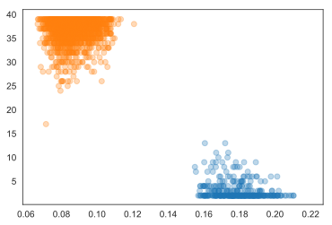
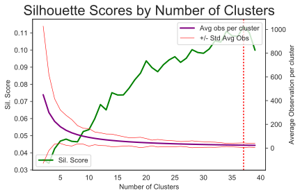
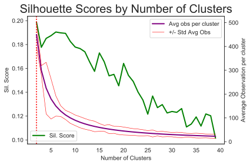
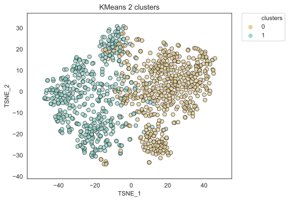
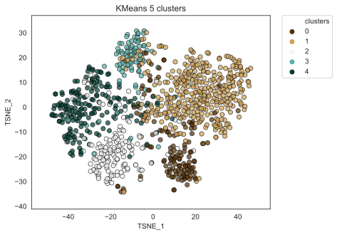

Jordan Landers | Thinkful | Unit 4 Capstone
range(2,50) clusters with the first x combinations of the 20 choose 10 combinations of reporters with more than 120 reporting pieces available. Modelled with both LSA and doc2vec feature sets.| LSA | Doc2Vec |
|---|---|
| score = .11, clusters = 37 | score = .21, clusters = 2 |

-Doc2Vec features performed better than LSA features. - D2V split the documents into Science/Not Science.
| LSA | Doc2Vec |
|---|---|
|  |  |
| score = .11, clusters = 37 | score = .21, clusters = 2 |

num_clusters = 2: (Politics, Health Care), (Health Science, Tech, Natural Science & Aerospace)|  |
| Model | Train Score | Test Score |
|---|---|---|
| Logistic Reg | .72 | .08 |
| Grad Boosting | 1 | .07 |
| SVC | 1 | .07 |
| Model | Train Score | Test Score |
|---|---|---|
| Logistic Reg | .93 | .83 |
| Grad Boosting | 1 | .73 |
| SVC | .11 | .07 |